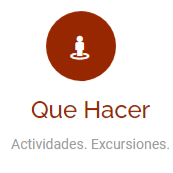
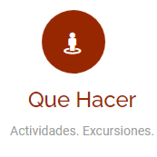
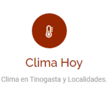
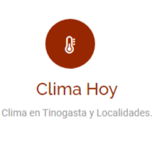
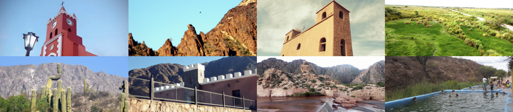

Acceso
Galeria
Contactanos
Por vía aérea
Hasta la ciudad de San Fernando del Valle de Catamarca, desde la terminal de ómnibus, hasta Tinogasta Via
Terrestre
Coordenadas GPS de Tinogasta:
28°03′55″S y 67°33′52″W
Como llegar a Tinogasta
desde San Fernando del Valle de Catamarca
- Accede a Av. Circunvalación Nestor Kirchner/RN38 en Valle Viejo desde San Martín y Av. Güemes.9 min - 3,9 km
- Dirígete al este por San Martín hacia Rivadavia. - 1,1 km
- Gira a la derecha con dirección a Av Italia - 160 m
- Gira a la izquierda con dirección a Dr. Rodríguez - 280 m
- Gira a la derecha con dirección a Luis Ahumada - 400 m
- Gira a la izquierda en la 3ª intersección hacia Av. Güemes. - 1,2 km
- En la rotonda, toma la 2.ª salida - 77 m
- Continúa por Av. Güemes - 450 m
- Usa el carril derecho para tomar la vía de acceso en dirección a Chumbicha/La Rioja. - 270 m
- Sigue por RN38 hacia 25 de Mayo/RN60 en Tinogasta. 3 h 16 min (274 km)
- Incorpórate a Av. Circunvalación Nestor Kirchner/RN38Continúa hacia RN38 - 71,5 km
- Gira levemente a la derecha con dirección a RN60 - 58,7 km
- En la rotonda, toma la 1.ª salida y continúa por RN60 - 23,8 km
- Gira a la derecha - 10,4 km
- Continúa recto - 87 m
- Gira a la derecha con dirección a RN60 - 108 km
- Gira a la derecha con dirección a Av. San Martin - 1,5 km
- Gira a la izquierda con dirección a Eva Perón - 700 m
- Gira a la izquierda con dirección a 25 de Mayo/RN60 - 3 m

Accesos

 


 

Galeria de fotos
Conoce todo el Departamento de Tinogasta desde esta increíble Galería de Fotos de sus atractivos, rutas, y sus
lugares mas bellos.
Galeria de imágenes
Muestra fotográfica

infoturismotinogasta@gmail.com
Turismo Tinogasta
@turismo.tinogasta
3837-430666